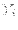
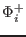
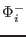
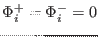
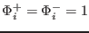

Next: Lagrangian particle random walk Up: Utilities Previous: Diffusion schemes Contents
INTERFACE:
subroutine adv_center(N,dt,h,ho,ww,Bcup,Bcdw,Yup,Ydw,method,mode,Y)DESCRIPTION:
This subroutine solves a one-dimensional advection equation. There are two options, depending whether the advection should be conservative or not. Conservative advection has to be applied when settling of sediment or rising of phytoplankton is considered. In this case the advection is of the form
Non-conservative advective transport has to be applied, when the water has a non-zero vertical velocity. In three-dimensional applications, this transport would be conservative, since vertical divergence would be compensated by horizontal convergence and vice versa. However, the key assumption of one-dimensional modelling is horizontal homogeneity, such that we indeed have to apply a vertically non-conservative method, which is of the form
The discretized form of (234) is
For the non-conservative form (235), an extra term needs to be included:
Which advection method is applied is decided by the flag mode, which gives conservative advection (236) for mode=1 and non-conservative advection (237) for mode=0.
Fluxes are defined at the grid faces, the variable  is defined at the grid centers. The fluxes are computed in an upstream-biased way,
To obtain monotonic and positive schemes also in the presence of strong gradients, so-called slope limiters are aplied for the factors  and . The two most obvious cases are the first-order upstream discretisation with  and the Lax-Wendroff scheme with . The subroutine adv_center.F90 provides six different slope-limiters, all discussed in detail by Pietrzak (1998):
If during a certain time step the maximum Courant number is larger than one, a split iteration will be carried out which guarantees that the split step Courant numbers are just smaller than 1.
Several kinds of boundary conditions are implemented for the upper and lower boundaries. They are set by the integer values Bcup and Bcdw, that have to correspond to the parameters defined in the module util, see section 8.2. The following choices exist at the moment:
For the value flux, the boundary values Yup and Ydw are interpreted as specified fluxes at the uppermost and lowest interface. Fluxes into the boundary cells are counted positive by convention. For the value value, Yup and Ydw specify the value of at the interfaces, and the flux is computed by multiplying with the (known) speed at the interface. For the value oneSided, Yup and Ydw are ignored and the flux is computed from a one-sided first-order upstream discretisation using the speed at the interface and the value of at the center of the boundary cell. For the value zeroDivergence, the fluxes into and out of the respective boundary cell are set equal. This corresponds to a zero-gradient formulation, or to zero flux divergence in the boundary cells.
Be careful that your boundary conditions are mathematically well defined. For example, specifying an inflow into the boundary cell with the speed at the boundary being directed outward does not make sense.
USES:
use util IMPLICIT NONEINPUT PARAMETERS:
number of vertical layers integer, intent(in) :: N time step (s) REALTYPE, intent(in) :: dt layer thickness (m) REALTYPE, intent(in) :: h(0:N) old layer thickness (m) REALTYPE, intent(in) :: ho(0:N) vertical advection speed REALTYPE, intent(in) :: ww(0:N) type of upper BC integer, intent(in) :: Bcup type of lower BC integer, intent(in) :: Bcdw value of upper BC REALTYPE, intent(in) :: Yup value of lower BC REALTYPE, intent(in) :: Ydw type of advection scheme integer, intent(in) :: method advection mode (0: non-conservative, 1: conservative) integer, intent(in) :: modeINPUT/OUTPUT PARAMETERS:
REALTYPE :: Y(0:N)DEFINED PARAMETERS:
REALTYPE, parameter :: one6th=1.0d0/6.0d0 integer, parameter :: itmax=100REVISION HISTORY:
Original author(s): Lars Umlauf
Karsten Bolding 2012-12-28